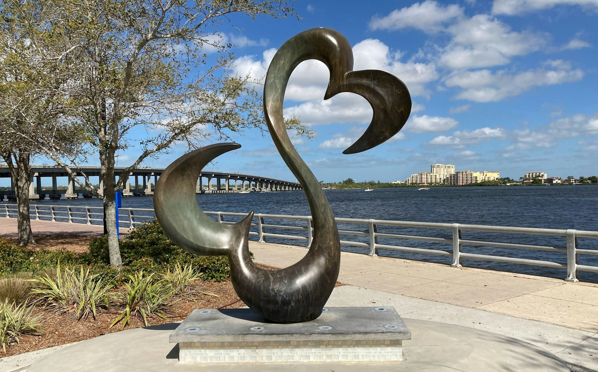
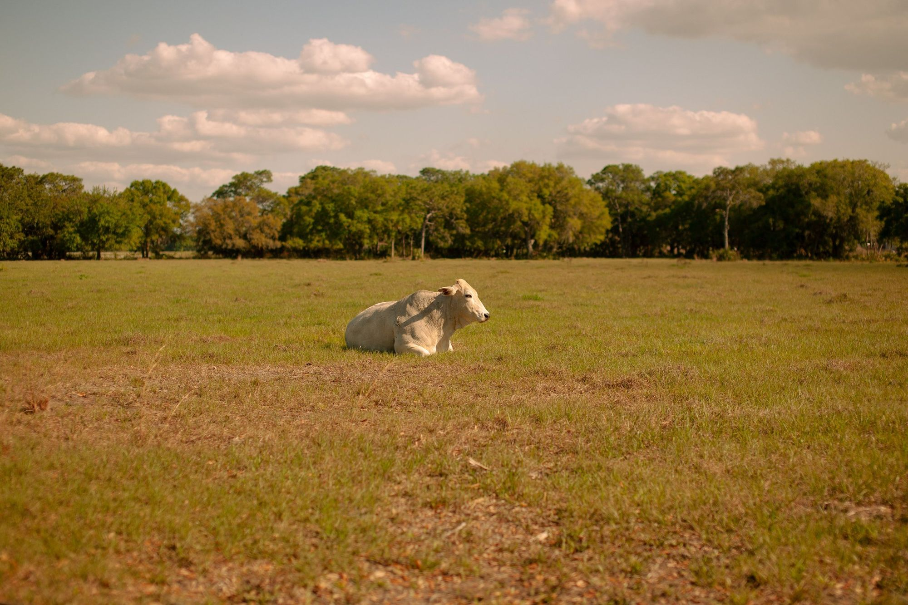

01

Bradenton, Florida
Homes for sale in Bradenton, the Manatee County seat on the Manatee River, from West Bradenton to the newer communities out east.
Bradenton at a glance
Downtown Bradenton faces the Manatee River. Old Main Street, lined with century-old buildings, runs down to the Twin Dolphin Marina, and the Riverwalk follows the water for about two miles between the Green and DeSoto bridges.
Joseph Addison Braden settled here in 1842 and built a pier and a stockade known as Fort Braden. The town got its post office in 1878 as Braidentown, misspelled on the petition; it became Bradentown in 1905 and Bradenton in 1924. An 1888 election made it the Manatee County seat, and the present courthouse on Manatee Avenue went up in 1913 and 1914.
17min
Sarasota Bradenton International Airport
18min
Manatee Public Beach
22min
Downtown Sarasota
60min
Tampa International Airport
Approximate drive times from City Hall on Old Main Street without traffic (OSRM routing, read 2026-10-23)
Bradenton Riverwalk
About two miles on the Manatee River, with a splash park and an amphitheater
Village of the Arts
Galleries and studios in restored homes, and a monthly ArtWalk
LECOM Park
The Pittsburgh Pirates' spring training home since 1969
The Bishop Museum of Science and Nature
A planetarium and the Parker Manatee Rehabilitation Habitat
De Soto National Memorial
A National Park Service site on the De Soto expedition of 1539
Saved searches
Each card opens a live search of the MLS listings, updated as they change.
01

02

03

04
Homes built in the last ten years, including the communities farther east.
View homes

The Bradenton Riverwalk runs about two miles along the Manatee River between the Green and DeSoto bridges, a major expansion of Rossi Park. Along it are a walking path, fishing spots, beach volleyball, a skate park, a playground, a splash park and the Mosaic Amphitheater, and the Riverwalk Pier is where the Gulf Islands Ferry leaves for Anna Maria Island. The Bishop Museum of Science and Nature sits on the Riverwalk too, with a planetarium and the Parker Manatee Rehabilitation Habitat.
Old Main Street runs to the waterfront Twin Dolphin Marina past buildings a century old, and City Hall is at 101 Old Main Street. On Saturdays from October through May, the nonprofit Realize Bradenton runs the Bradenton Public Market downtown, with more than 100 vendors. The city counts more than 67 public art pieces and more than 25 historic sites downtown, and Freebee gives free rides around downtown through its app.
The Village of the Arts covers the blocks from 9th Avenue West to 17th Avenue West between 9th Street West and 14th Street West, with galleries, studios and shops in restored historic homes and an ArtWalk on the first weekend of each month. Close by, LECOM Park has been the Pittsburgh Pirates’ spring training home since 1969. Built in 1923 in the Spanish Mission style and nicknamed Florida’s Fenway, it is the third-oldest stadium still used by a Major League club, and a renovation added a boardwalk across the outfield.
Manatee Village Historical Park gathers 15 points of interest on Manatee County from 1840 to 1918, among them the county’s first courthouse, a wooden building from 1860 on the National Register of Historic Places, and admission is free. Manatee Mineral Springs Park, in the Old Manatee district, keeps a spring that American Indians used. West of downtown, De Soto National Memorial, founded by the National Park Service in 1948, tells the story of the De Soto expedition of 1539 and runs ranger-led kayak tours in summer.
Ryan and Katie find that West Bradenton, Palma Sola, the waterfront neighborhoods and the newer communities farther east each feel completely different, so the part of town matters as much as the house. Manatee Avenue and Cortez Road both run west to the bridges onto Anna Maria Island, U.S. 41 and U.S. 301 run north and south, and Manatee County Area Transit’s Route 99 runs between downtown Bradenton and downtown Sarasota.
Day to day
School information is factual and by district. Always confirm a specific address in the district's school finder.
In their words
Bradenton is definitely not a one-size-fits-all market. West Bradenton, Palma Sola, waterfront neighborhoods, and newer communities farther east all feel completely different. That’s what makes it fun to explore. Whether you want boating, character, more space, or newer construction, choosing the area for your lifestyle here really matters.
Katie and Ryan Sherman
Questions
The Manatee County School District. Confirm the school for any address with the district, since attendance zones change.
No. Many homes with a Bradenton mailing address are in unincorporated Manatee County, where county rules apply instead of the city's. Check the parcel with the Manatee County Property Appraiser.
Yes. The Gulf Islands Ferry leaves the Riverwalk Pier for the Historic Bridge Street Pier and Coquina Beach, about 50 minutes each way. Its schedule changes, so check it before you go.
Yes. LECOM Park has been the Pirates' spring training home since 1969. The ballpark was built in 1923, and the Bradenton Area Convention and Visitors Bureau calls it the third-oldest stadium still used by a Major League club.
Nearby



Resources
Contact
Call Katie at 321-429-9031 or send a note about the part of Bradenton you are weighing and what you want close by: the water, downtown or more room.